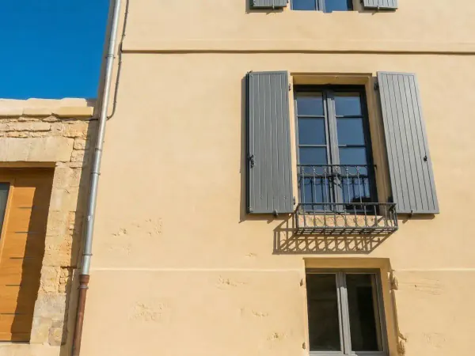
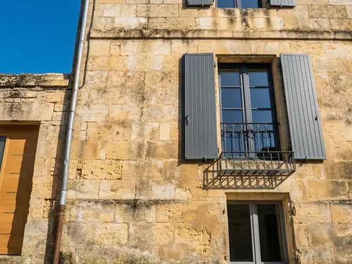
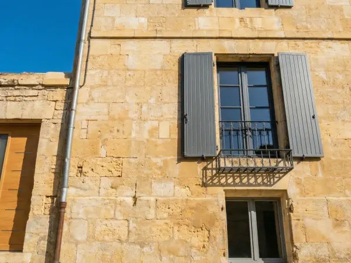
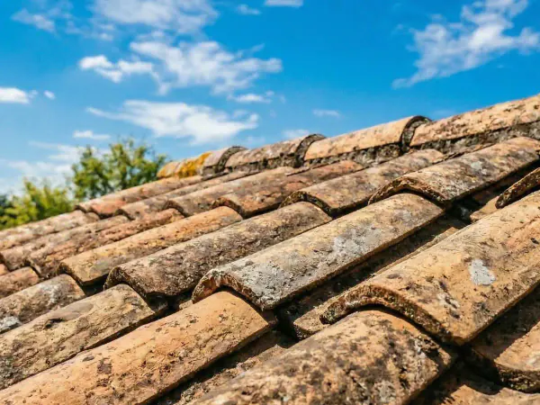
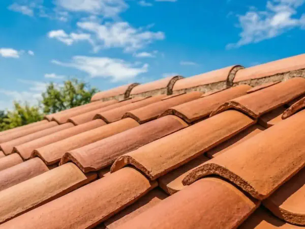
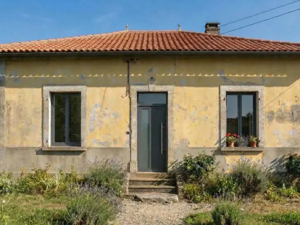
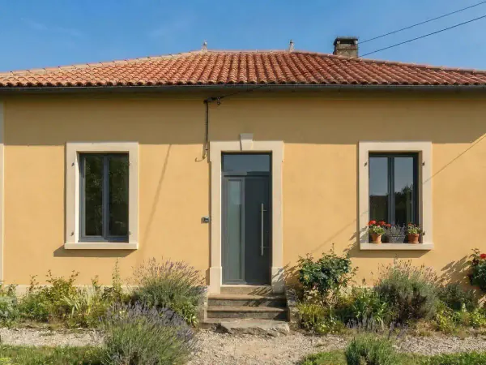

Artisan local · Angoulême · Charente
Façade abîmée, toiture encrassée, intérieur à rénover ? VPRR, artisan local à L'Isle-d'Espagnac, intervient dans toute la Charente - devis gratuit sous 48h, garantie décennale.
Services
Du nettoyage de façade au ravalement complet, de la toiture à la rénovation intérieure - un seul artisan local pour tous vos travaux.
Façade encrassée, peinture écaillée ou fissures ? Nous remettons votre extérieur à neuf avec les techniques adaptées à chaque support.
Mousses, tuiles déplacées ou gouttières à refaire ? Nous assurons l'entretien et la réfection de votre toiture en toute sécurité.
Façade noire, mousse, pollution ? Nous nettoyons et traitons vos murs pour retrouver une façade propre et durable.
Protégez et embellissez votre maison avec une peinture extérieure adaptée à votre support et à la météo en Charente.
Améliorez votre confort et réduisez vos factures avec une isolation des combles et des murs par l'intérieur.
Notre méthode
De votre premier appel à la fin du chantier : un seul interlocuteur, un déroulé clair.
Un appel ou le formulaire : décrivez-nous votre projet, nous revenons vers vous sous 48 h.
Nous venons voir l'état réel de la façade, de la toiture ou de la pièce. C'est gratuit.
Un prix transparent, sans frais cachés et sans engagement de votre part.
Chantier rangé chaque soir, finitions soignées, garantie décennale.
Galerie
Découvrez nos derniers projets de ravalement, peinture et rénovation en Charente.







Blog
Conseils d'experts et guides pratiques pour réussir vos projets de rénovation, peinture et ravalement.
Zone d'intervention
Basés à L'Isle-d'Espagnac, nous couvrons Angoulême et toute la Charente pour vos projets de rénovation.
Autre localité ? Vérifiez votre commune en quelques secondes.
FAQ
Retrouvez les réponses aux questions les plus courantes sur nos services.
Oui, une déclaration préalable de travaux (DP) est souvent nécessaire, surtout si l'aspect extérieur change (couleur, enduit, ouvertures). Les règles dépendent de votre commune (PLU, secteur protégé, périmètre d'un monument historique) : le plus sûr est de se renseigner en mairie avant de choisir la teinte. Nous pouvons vous accompagner dans la constitution du dossier.
Voici les fourchettes habituelles (TTC, particulier, hors échafaudage) :
Ces repères sont indicatifs : le détail est sur chaque page de service, et le devis gratuit donne le prix exact. TVA à 10 % pour un logement de plus de 2 ans (5,5 % possible pour certains travaux d’isolation).
Non, lorsque la pression et l’abrasif sont adaptés au support. C’est la méthode la plus douce : un mélange d’eau et de poudre minérale projeté à basse pression, qui retire pollution, mousses, graffitis ou anciennes peintures sans altérer la pierre, la brique ou l’enduit. Contrairement à la haute pression, il ne creuse pas les joints.
Nous bâchons et masquons sols, meubles et menuiseries avant de commencer, et nous travaillons proprement pour limiter la poussière et les projections. Le chantier est nettoyé et rangé à la fin de chaque journée.
Nous intervenons avec une assurance Responsabilité Civile Professionnelle et une garantie décennale pour les travaux qui en relèvent. Nos attestations d'assurance sont à jour et disponibles sur simple demande, avant le début du chantier.
Besoin de plus de réponses sur nos services à Angoulême et en Charente ?
Voir la FAQ complèteAvis Google
Découvrez ce que nos clients disent de nos prestations de rénovation à Angoulême et en Charente.
Vous êtes satisfait de nos services ? Laissez-nous un avis sur Google.
Devis gratuit
Une question, un devis ? Décrivez-nous vos travaux : réponse personnalisée sous 48 h, sans engagement.